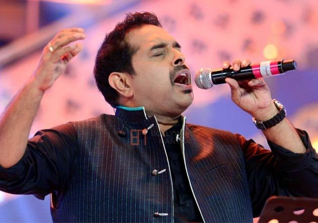

Shankar Mahadevan
The man who revolutionised Indian Music Industry

Early Life
Shankar Mahadevan was born in Chembur, Mumbai into a Tamil speaking family from Palakkad, Kerala.[2][3] He learned Hindustani classical and Carnatic music as a child, and began playing the veena at the age of five under Shri Lalitha Venkataraman. Mahadevan studied music under Pandit Shrinivas Khale[4][5] and T.R. Balamani.[6]
He is an alumnus of Our Lady of Perpetual Succour High School, Chembur and graduated in 1988 with a degree in Computer Science and Software Engineering from the Ramrao Adik Institute of Technology in Navi Mumbai, affiliated to Mumbai University, and was a software engineer for the company, Leading Edge.
Music Career
After working for Leading Edge Systems (now Trigyn Technologies Limited), Mahadevan ventured into music.
Achievements
2000: National Film Award for Best Male Playback Singer - "Yenna Solla Pogirai" (Kandukondain Kandukondain)
2007: Swaralaya-Kairali-Yesudas Award for outstanding contribution to Indian film music[11]
2007: National Film Award for Best Male Playback Singer - "Maa" (Taare Zameen Par)
2008: Kerala State Film Award for Best Male Playback Singer - "Kalyana Kacheri" (Madampi)[12]
2009: Asianet Film Award for Best Male Playback - "Pichavecha Naal" (Puthiya Mukham)
2009: Annual Malayalam Movie Awards (Dubai) for Best Male Singer - "Pichavecha Naal" (Puthiya Mukham)[13]
2011: Lata Mangeshkar Award by Government of Andhra Pradesh[14]
2011: Kerala Film Critics Award for Best Male Playback Singer - "Indhumukhi Varumo" (Holidays)[15]
2012: MAA Music Award for Best Male Playback Singer - "Nee Dookudu" (Dookudu)
2012: National Film Award for Best Male Playback Singer - "Bolo Na" (Chittagong)
2015: Tulu Cinemotsava Awards for Best Playback Singer - Rikshaw Driver (Tulu Movie)